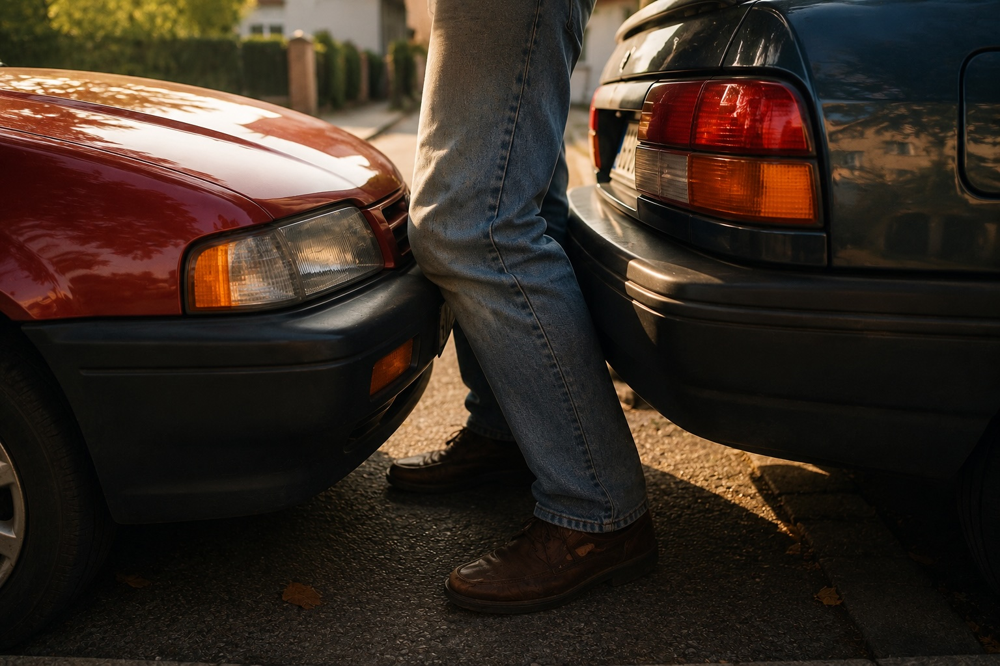

Es gibt Dinge im Leben, die man planen kann. Kinder gehören nicht dazu.
Als Hilde und ich 1984 geheiratet hatten, gingen wir eigentlich ganz selbstverständlich davon aus, dass wir irgendwann auch eine Familie gründen würden. Wir machten uns darüber keine großen Gedanken. Es würde eben passieren, wenn die Zeit gekommen war. Doch die Zeit kam nicht. Monat für Monat hofften wir, dass es diesmal geklappt haben könnte, und Monat für Monat wurden wir enttäuscht.
Als wir nach Heidelberg zogen, lagen bereits mehrere Jahre hinter uns, in denen wir vergeblich gewartet hatten. Irgendwann richtet man sich langsam mit dem Gedanken ein, dass das Leben vielleicht einen anderen Weg nehmen wird als den, den man sich einmal vorgestellt hatte. Dann war es eben so. Wir begannen, uns mit dem Thema Adoption zu beschäftigen. Noch war nichts entschieden, aber zum ersten Mal dachten wir ernsthaft darüber nach, einem Kind ein Zuhause zu geben, das seine Eltern verloren hatte oder aus anderen Gründen keines hatte.
Vielleicht war es gerade deshalb so überraschend, als Hilde eines Morgens eher beiläufig meinte, sie sei vielleicht schwanger. Solche Vermutungen hatte es vorher schon gegeben, und jedes Mal waren wir enttäuscht worden. Auch diesmal machten wir uns zunächst keine allzu großen Hoffnungen. Wir besorgten einen Schwangerschaftstest. Wir standen gemeinsam im Badezimmer und schauten auf dieses kleine Stück Plastik. Der Test war eindeutig. Hilde war schwanger! Wahnsinn.
Eben noch hatten wir darüber gesprochen, welche Möglichkeiten uns vielleicht irgendwann noch blieben. Im nächsten Moment wussten wir, dass wir Eltern werden würden. Wir waren beide völlig aus dem Häuschen und hatten Mühe, einen klaren Gedanken zu fassen.
Wir mussten etwas erledigen und stiegen in den Mazda. Aus irgendwelchen Gründen sprang er nicht an. Déjà-vu! Ich musste an unseren Hirsch in San Francisco denken und schaute im Motorraum nach. Irgendwann hatte ich das Problem gefunden und sagte zu Hilde, sie solle den Anlasser betätigen.
Ich stand dabei zwischen unserem Mazda und dem davor geparkten Auto. Hilde saß am Steuer, immer noch völlig daneben und überwältigt von der Nachricht. In ihrer Aufregung vergaß sie, die Kupplung zu treten. Der Mazda machte einen Satz nach vorne und klemmte meine Knie zwischen den beiden Stoßstangen ein.
Der Schmerz war gewaltig. Für einen kurzen Moment war ich überzeugt, dass beide Knie gebrochen waren. Ich konnte mich kaum bewegen und stützte mich erst einmal am Auto ab. Hilde sprang völlig entsetzt aus dem Wagen. Später erzählte sie mir, was ihr in diesem Augenblick als Erstes durch den Kopf gegangen war. Sie hatte nicht an den Mazda gedacht und auch nicht daran, ob das Auto beschädigt war. Ihr erster Gedanke lautete: Jetzt bekomme ich endlich ein Kind, und gerade habe ich den Vater des Kindes zum Krüppel gefahren.

Zum Glück war nichts gebrochen. Meine Knie taten zwar tagelang ziemlich weh, aber irgendwann war alles wieder verheilt. Unsere Freude über die Schwangerschaft war ohnehin größer als jeder Schmerz. Nach so vielen Jahren des Wartens konnten wir unser Glück kaum fassen.
Von diesem Tag an begann für uns ein neuer Lebensabschnitt. Plötzlich drehte sich alles um Fragen, über die wir vorher nie ernsthaft nachgedacht hatten. Wie würde unser Leben mit einem Kind aussehen? Würden wir gute Eltern sein? Wo sollte das Kinderzimmer entstehen? Welche Veränderungen würden auf uns zukommen? Zum ersten Mal seit langer Zeit blickten wir nicht mehr nur auf die nächsten Wochen oder Monate, sondern weit darüber hinaus.
Neun Monate später sollte unser Sohn Jan geboren werden. Doch das ist wieder eine andere Geschichte.